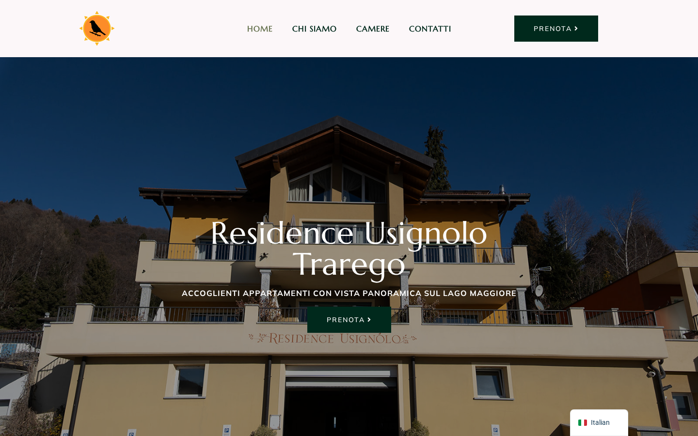
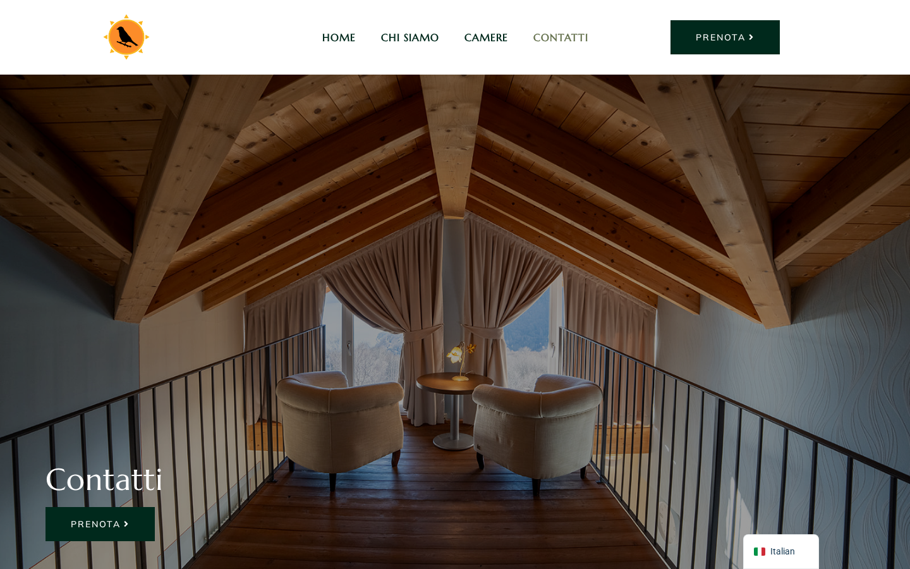

Il sito era irraggiungibile da questa mattina alle 09:13 a causa di un errore nella configurazione del server. Il problema era legato alla migrazione del dominio avvenuta ieri: un aggiornamento automatico del server ha cancellato le impostazioni personalizzate. Abbiamo ricreato la configurazione in modo permanente e corretto anche alcuni riferimenti interni rimasti dal vecchio server. Il sito funziona correttamente su desktop e mobile.
Visitando residenceusignolo.it compariva una pagina di errore di Cloudflare con codice 520. Il sito era completamente irraggiungibile da qualsiasi dispositivo.
Ieri abbiamo messo online il sito con il dominio definitivo. Le impostazioni del server erano state modificate per accettare il nuovo indirizzo. Questa mattina un aggiornamento automatico del sistema di gestione del server ha ripristinato le impostazioni originali, cancellando la modifica. Il server non sapeva più che doveva rispondere a "residenceusignolo.it".
Abbiamo creato una configurazione dedicata per il dominio residenceusignolo.it, separata dal sistema di gestione automatica. In questo modo, anche se il sistema si aggiorna, la configurazione del sito non verrà più toccata.

Abbiamo trovato e corretto alcuni riferimenti interni (font e risorse grafiche) che puntavano ancora al vecchio server di staging. Ora tutto il sito carica le risorse dall'indirizzo corretto.
Abbiamo controllato le pagine principali del sito: homepage, chi siamo, contatti e camere. Tutto funziona correttamente, nessun errore.

Il sito si visualizza correttamente anche da telefono. Layout, immagini e menù di navigazione funzionano senza problemi.
Il sito non ha ancora una descrizione per i motori di ricerca (meta description). Non è un errore grave, ma è importante per la visibilità su Google. Consigliamo di aggiungerla.
| Campo | Valore |
|---|---|
| Server | tanuki.giobi.com (188.245.145.207) |
| CDN | Cloudflare (zona 646a0b9c...) |
| App path | /home/forge/usignolo.staging.re/ |
| Stack | WordPress + Elementor, PHP 8.3, nginx |
| Scenario | Post-fix validation |
| Tempo caricamento | 0.76s |
| Errori console | 0 |
| Richieste fallite | 0 |
| Score | 95/100 |
Il dominio residenceusignolo.it puntava a Tanuki via Cloudflare. Il vhost nginx era stato modificato ieri aggiungendo server_name residenceusignolo.it www.residenceusignolo.it al file gestito da Laravel Forge (usignolo.staging.re).
Questa mattina alle 09:13 un'operazione Forge (probabile deploy o SSL renewal) ha:
| Problema | Punti | Note |
|---|---|---|
| Meta description mancante | -5 | Pre-esistente, non legato al 520 |
Mai modificare un vhost gestito da Laravel Forge per aggiungere domini di produzione. Forge resetta i vhost ai suoi template durante deploy/SSL operations. Creare sempre un file nginx separato per i domini custom.